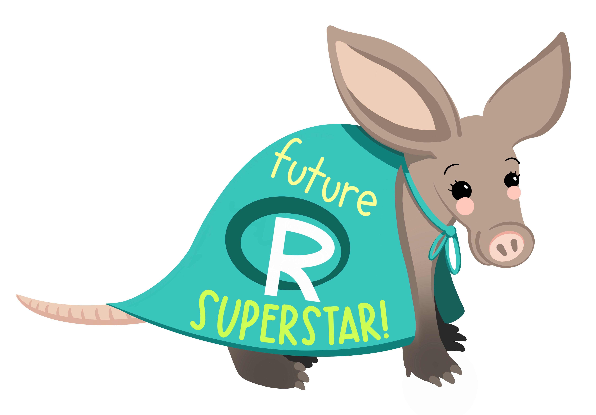
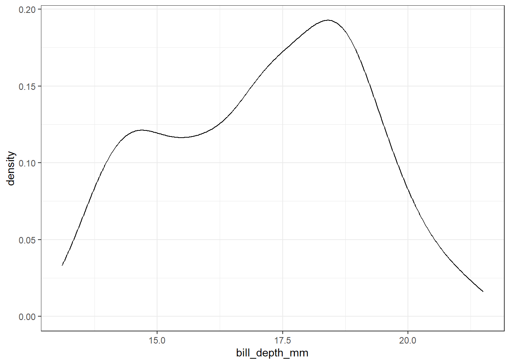
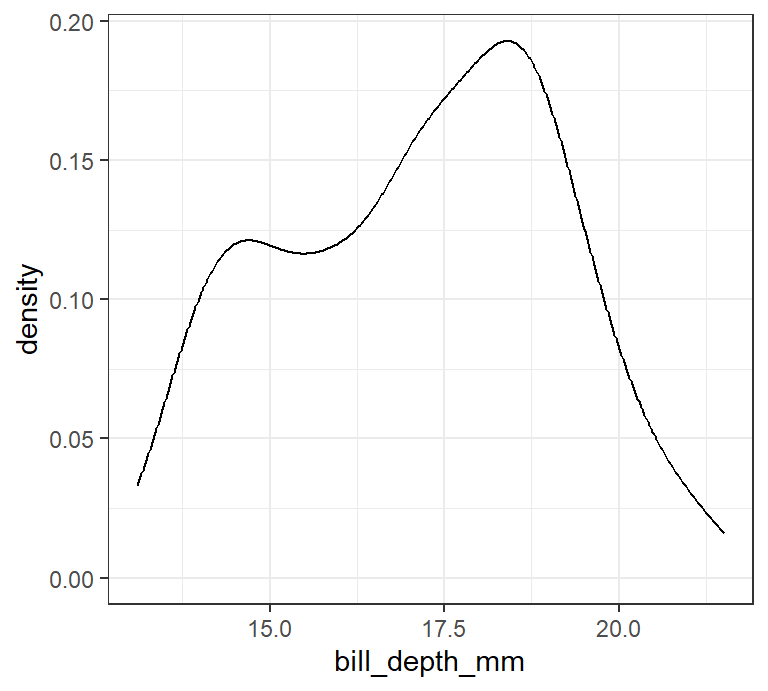

{kind=link}
```{r}
2 + 2
```[1] 4Hands on
In brief, Quarto allows you to combine a variety of content in a document (text, equations, images, code, graphics, etc.) and then compile it all into a single document, such as HTML, PDF, etc. The term used in the Quarto environment for this compilation is very poetically called knitting.
Today, we will explore the data from the Palmerpenguins package to answer the following question:
What is the relationship between flipper length and body mass? Does this relationship varie between species?
But first, let’s get a grasp of the basics and create our first Quarto document!
.qmd) clicking on File > New File > Quarto DocumentRender to render/knit your document. Observe the result. What type of document is this?The most common thing you are likely to do in your Quarto document is text formatting. The language used for this is called Markdown. It is a fairly basic language but allows you to intuitively perform most basic formatting tasks.
Markdown-formatted document should be publishable as-is, as plain text, without looking like it’s been marked up with tags or formatting instructions. - John Gruber
Formatting text is easy, and follows a common structure by surrounding the text with special characters
*italic* **bold** ~~strikeout~~ `code`
superscript^2^ subscript~2~
[underline]{.underline} [small caps]{.smallcaps}italic bold strikeout code
superscript2 subscript2
underline small caps
Sections are added to a document using different numbers of #:
# 1st Level Header
## 2nd Level Header
### 3rd Level Header- Bulleted list item 1
- Item 2
- Item 2a
- Item 2b
1. Numbered list item 1
2. Item 2
i) sub-item 1
A. sub-sub-item 1Bulleted list item 1
Item 2
Item 2a
Item 2b
Numbered list item 1
Item 2
For lists, Markdown is case-sensitive, meaning you need to format the text correctly for it to recognise a sub-item, for example.
Add a link using square brackets and round brackets:
<https://quarto.org/>
A link to the [Quarto documentation](https://quarto.org/).A link to the Quarto documentation.
Add an image using .
You can add a caption easily within the brackets as such 

Use relative file paths rather than absolute file paths - other people won’t share the same absolute file path as you!
File paths are relative to where the Quarto document is!
cs-workshop-2025”)penguins-template.qmd in Rstudioinstall.packages("palmerpenguins") into the Console and run it onceOpen the penguins-template.qmd file in RStudio
Add a Level 2 header titled “Data Overview” after the existing content in the file
Copy and paste the following text into the file:
The `penguins` dataframe contains 344 observations of penguins.
It includes several qualitative variables, including the following:
- Sex of the penguins
- Island where they are found
- Species to which they belong
The represented species are: Chinstrap, Gentoo, and Adélie.Modify the text so that the final rendering looks like this:
The penguins
penguinscontains 344 observations of penguins. It includes several qualitative variables, including the following:
- Sex of the penguins
- Island where they are found
- Species to which they belong
The represented species are : Chinstrap, Gentoo et Adélie.
Add the online image found at this link to your document, then add a caption to this image
Render your document. Observe the changes.
Code chunks are the main way of including executable R code in a document.
They always start with three backticks, followed by the an r in curly brackets.
```{r}
2 + 2
```[1] 4The result of the code is outputted after the chunk as you can see.
A more coherent example:
```{r}
library(ggplot2)
library(palmerpenguins)
data(penguins)
``````{r}
ggplot(data = penguins,
mapping = aes(x = bill_depth_mm)) +
geom_density() +
theme_bw()
```Warning: Removed 2 rows containing non-finite outside the scale range
(`stat_density()`).
We can change the chunk execution options so that the code messages do not show with warning: false.
```{r}
#| warning: false
ggplot(data = penguins,
mapping = aes(x = bill_depth_mm)) +
geom_density() +
theme_bw()
```
Most common execution options:
| Option | Description if : true |
|---|---|
eval |
Evaluate the code chunk |
echo |
Include the source code in output |
output |
Include the results of executing the code |
warning |
Include warnings/messages in the output |
error |
Include errors in the output (errors won’t halt document processing) |
include |
Prevent any output (code or results) from being included |
code-foldInstead of simply removing the code, we can choose to include code but have it hidden by default.
```{r}
#| warning: false
#| code-fold: true
ggplot(data = penguins,
mapping = aes(x = bill_depth_mm)) +
geom_density() +
theme_bw()
```fig-```{r}
#| warning: false
#| fig-align: center
#| fig-width: 4
#| fig-asp: 0.9
#| fig-cap: "Distribution of bill depth sizes"
ggplot(data = penguins,
mapping = aes(x = bill_depth_mm)) +
geom_density() +
theme_bw()
```
labelWe can add internal links for cross-referencing using label.
```{r}
#| warning: false
#| fig-align: center
#| fig-width: 4
#| fig-asp: 0.9
#| fig-cap: "Distribution of bill depth sizes"
#| label: fig-billdepth
ggplot(data = penguins,
mapping = aes(x = bill_depth_mm)) +
geom_density() +
theme_bw()
```Many penguins in the dataset seem to have a bill depth between 18 and 19mm ([@fig-billdepth]).Many penguins seem to have bill depths between 18 and 19mm (Figure 1).
tbl-) and equations (eq-)Table options are similar to those of figures, but instead of fig- for some options, it is tbl-
```{r}
#| tbl-align: center
#| tbl-cap: "First 5 rows and columns of the penguins dataset"
#| label: tbl-pengdata
knitr::kable(head(penguins[,1:5]))
```| species | island | bill_length_mm | bill_depth_mm | flipper_length_mm |
|---|---|---|---|---|
| Adelie | Torgersen | 39.1 | 18.7 | 181 |
| Adelie | Torgersen | 39.5 | 17.4 | 186 |
| Adelie | Torgersen | 40.3 | 18.0 | 195 |
| Adelie | Torgersen | NA | NA | NA |
| Adelie | Torgersen | 36.7 | 19.3 | 193 |
| Adelie | Torgersen | 39.3 | 20.6 | 190 |
For equations, it is a bit different but still intuitive for cross-referencing.
$$
E = mc^2
$$ {#eq-linear}\[ E = mc^2 \tag{1}\]
According to the @eq-linearAccording to the Equation 1
You can include executable expressions inside the markdown (text) by enclosing the expression in `r `
The penguins dataset is composed of 344 observations.The penguins dataset is composed of 344 observations.
Add a code block to generate a table showing the first 5 rows of the penguins dataframe using the knitr::kable() function. Render the document.
For those not familiar with R, unfold the following, copy and paste into the document, and render:
knitr::kable(head(penguins))Add a second code block to generate a figure (using R base or ggplot2) to explore the relationship between the body mass of penguins and the length of their flippers, as well as the differences between species. Render the document.
For those not familiar with R, unfold the following, copy and paste into the document and render:
g <- ggplot(penguins, aes(x = flipper_length_mm,
y = body_mass_g)) +
geom_point(aes(color = species, shape = species),
size = 2,
alpha = 0.7) +
scale_color_manual(values = c("darkorange","purple","cyan4")) +
labs(x = "Flipper length (mm)",
y = "Body mass (g)",
color = "Penguin species",
shape = "Penguin species") +
theme_minimal()
gAdd the following options to the code chunk, one by one. Render the document after each modification and observe the changes:
echo: false
warning: false
Just below the figure, provide a description of the relationship between the two variables, both overall and for each species.
Modify the size of the figure using the following options, one by one. Render the document after each modification and observe how the figure changes:
fig-width: 10
fig-height: 3
out-width: "100%"
out-width: "20%"
Add a label to the figure with the prefix fig-.
Add a caption to the figure using the fig-cap chunk option. In the description written in at 4., add the cross-reference to this figure. Render your document.
Well done! You’ve just created your first Quarto report 🎉 !

There is much more that is possible with Quarto, such as:
And so much more… Go see the full Quarto documentation.
Yet Another Markup Language, corresponding the the metadata of a Quarto document↩︎